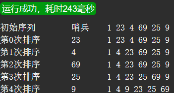

插入排序
Insert Sort
直接插入排序
- 思路
-
. Straight Insert Sort. 将一个待排序的记录，按其关键字大小，插入到前面已经排好序的子序列适当位置，直到对象全部插入为止. 基本过程：将无序序列的第一个记录取出，放在哨兵处；无序序列空出一个存储位置，作为中转；从有序序列后面开始，依次和哨兵比较；如果比哨兵大，就后移一个位置，直到找到插入的位置. 需要额外多1个空间作为哨兵，存放待插入的记录. 把第一个记录当作有序序列，从第2个记录开始. 有的UP主的数据从1号位置开始，空出来0号位置作为哨兵，从2号位置开始比较。
哨兵位 有序序列 无序序列 e0 e1 ... en-1 d ... d ... d #include <stdio.h> void dis(int arr[], int len); void insertSort(int arr[], int len); int main() { int arr[] = {1, 23, 4, 69, 25, 9}; int len=sizeof(arr)/sizeof(arr[0]); printf("初始序列\t哨兵\t"); dis(arr, len); insertSort(arr, len); return 0; } void insertSort(int arr[], int len) { int i, j, ref; for (i = 1; i < len; i++) { ref=arr[i]; j=i-1; while(ref<arr[j]){ arr[j+1]=arr[j]; j--; } arr[j+1]=ref; printf("第%d次排序\t%d\t",i-1,ref); dis(arr,len); } } void dis(int arr[], int len) { int i; for (i = 0; i < len; i++) { printf("%d ", arr[i]); } printf("\n"); } 编译结果 - 特点
-
. 稳定. 简单，容易实现. 多应用于线性表的顺序存储，也适合链式存储. 时间复杂度：O(n2)：两层循环. 空间复杂度：O(n2). 适合：基本有序的短序列. 不适合：无序，且n比较大的序列. 更多信息，请查看 Insertion Sort
- 待排序序列如下表，给出简单插入排序过程
-
0 1 2 3 4 5 6 7 初始 49 38 65 97 76 13 27 49* 0 49 38 65 97 76 13 27 49* 1 38 49 65 97 76 13 27 49* 2 38 49 65 97 76 13 27 49* 3 38 49 65 97 76 13 27 49* 4 38 49 65 76 97 13 27 49* 5 13 38 49 65 76 97 27 49* 6 13 27 38 49 65 76 97 49* 7 13 27 38 49 49* 65 76 97
折半插入排序
- 说明
- . Binary Insert Sort
- . 通过对半查找目标位置实现插入排序，包括对半查找和插入两个阶段
- . 插入进行到中后期时，前面序列已经是有序序列，可以快速找到目标插入位置
- 直接插入排序中，查找13的位置：
-
0 1 2 3 4 5 6 7 4 38 49 65 76 97 13 27 49* - 使用对半查找：
- 第1次 low=0, high=4, mid=(low+high)/2=2, loc(2)=65>13, 13应在前半段
- 第2次 low=0, high=1, mid=(low+high)/2=0, loc(0)=38>13, 13应在前半段, 即0号位置
- 只需2次就可以锁定目标位置
- 使用直接查找：
- 从前往后，需要比较2次；从后往前需要比较5次
- 特点
- . 稳定
- . 不适合链式存储
- . 时间复杂度：O(n2)
- . 空间复杂度：O(n2)
- . 适合无序、n较大的序列
- . 平均性能优于直接插入排序